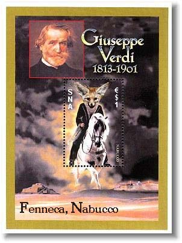

SPANISH NORTH AFRICA
Quite often the stamp collectors aren't very happy with the design of modern stamps. For this reason the Postal Administration of Spanish North Africa gives the possibility to any collector who has a bit of imagination, creativity and some skill in using a graphic program to design and to publish her/his own stamp.
All valid proposals will be published as soon as possible on the SNA site . There will be three awards for the best design (gold, silver and bronze). The participant who will be awarded gold will get also some complete, not SNA MNH sets and sheets (see below) from the webmaster of this site. Other SNA participants can also propose stamps as reward for the awarded designs.
A panel of three SNA judges will select the best three proposals. One of the judges is the webmaster of this site, Mr. Victor Manta from Switzerland, who won many prestigious Internet Websites awards. The participants have the possibility to propose the other two judges. Those proposals that will got the majority of votes will be nominated as SNA judges. If no further judges will be proposed, the webmaster of the SNA site will choose them by himself.
Please use a pseudonym (like: sna-designer-plus :) for your entry. When we will announce the awarded stamps, we will replace the pseudonym by your name, and we'll mention the country where you live. Therefore please let us know from the very beginning your pseudonym, your real name, the name of the country, and the names and e-mail addresses of two preferred judges (optional).
All three winning designs will be issued as SNA stamps. All designs belong to, and will be copyrighted by the SNA. To get an idea of what the SNA spirit means, please visit the SNA site and look attentively at the newer philatelic material presented on it.
The last entry date for your proposals is:
31st October 2004
The awarded designs will be announced on this site, on 24th December 2004.
Please read the short list of contest rules, published below.
The Contest Rules
To send a proposal, please click here, and please don't forget to: a) enter the required data, and b) to attach your graphic file(s). For an eventual correspondence with the panel of judges use a valid return e-mail address, please. It won't be distributed.
The Contest Entries

Click here to take a look at the the rewards for the SNA Golden Award 2003 winner (a selection only):
|
Created 01/09/03. Revised:
11/27/05. |
|